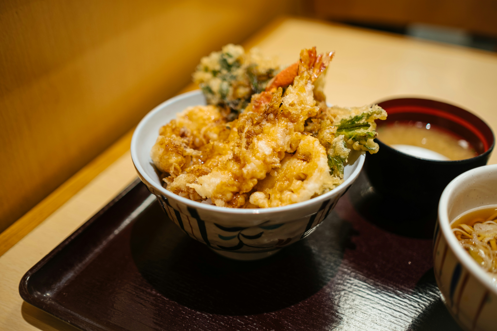

Tempura
Another of Japan's most famous dishes, tempura also underwent major development in the capital city. Before the Edo Period, mainly vegetables were used for tempura, but Edo cooks started to deep fry seafood from Edo Bay in tempura batter, resulting in the more varied dish we know today. A visit to a specialized tempura restaurant (tempura-ya) is the recommended way to enjoy tempura.
Shabu Shabu
Shabu-shabu is a Japanese nabemono hotpot dish of thinly sliced meat and vegetables boiled in water and served with dipping sauces. The term is onomatopoeic, derived from the sound – "swish swish" – emitted when the ingredients are stirred in the cooking pot.